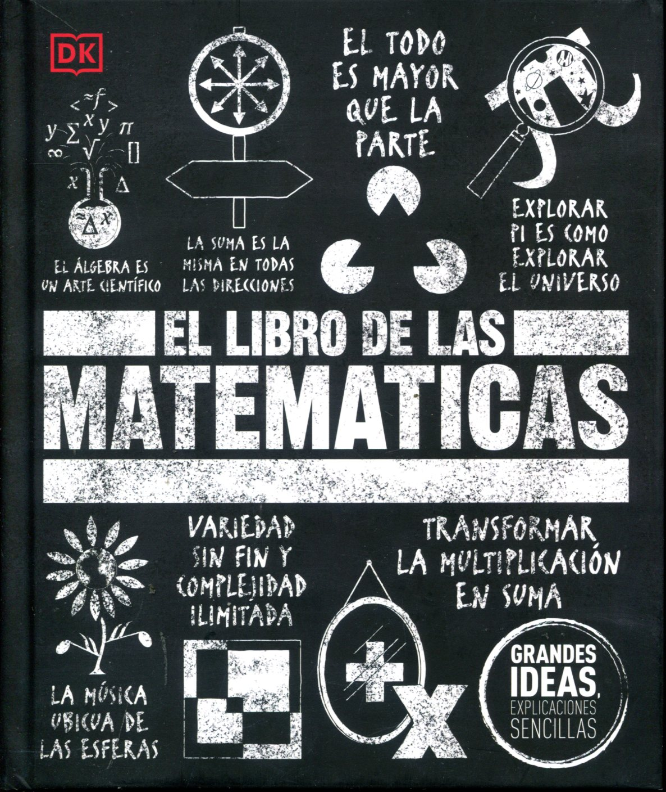

titulo del libro
descripcion del libro: Este libro fue elaborado como soporte didáctico para trabajar en el aula con alumnos de segundo año. Cada unidad del mismo comienza con situaciones problemáticas donde se retoman contenidos y se generan necesidades para abordar nuevos; algunos de los aportes teóricos están pensados para que los alumnos los vayan completando con las deducciones que van obteniendo en la resolución de las situaciones planteadas. Desde diversas actividades se intentan establecer relaciones con otras asignaturas como ser con Física y Dibujo Técnico; se producen argumentos para validar determinadas afirmaciones y se valora el lenguaje matemático para modelar situaciones de la vida cotidiana. Se espera que el alumno pueda desarrollar sus capacidades relacionadas con el área, conozca y comprenda los conceptos matemáticos para resignificarlos en la resolución de problemas. Prof. Maumary, Carina , Prof. Ruiz, María Laura
